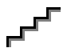
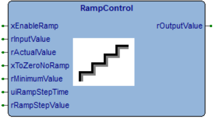

RampControl
Control Logic
Intermediate
FunctionBlock
v1.2.3
FBD Diagram

rampimage.png (Icon)

rampcontrol.png
Description

If not enabled by xEnable or rRampStepValue is 0, then the rOutput follows the rInputValue immediately, without any delay.
If xEnable is TRUE and rRampStepValue >0 then the rOutput reaches the rInputValue at step size defined by rRampStepValue,
each step is performed every uiRampStepTime time.
The rOutput starts from rActualValue every time the rRampStepValue is changed compared with previous.
The xToZeroNoRamp selection allows to jump immediately to 0 if InputValue is 0.
The rMinimumValue works only if xEnable is TRUE and rRampStepValue >0;
it represents the minimum value reachable by rOutputValue if rInputValue> 0, after rOutvalue has been higher than rMinimumValue.
Inputs (7)
| Name | Type | Init | Description |
|---|---|---|---|
| xEnable | BOOL | BOOL, range [FALSE,TRUE]. It enables the function | |
| rInputValue | REAL | REAL, range [0,100.0]. It is the target value for rOutput. | |
| rActualValue | REAL | REAL, unit [%], range [0,100.0]. It is the starting point for rOutput if the rRampStepValue is changed. | |
| xToZeroNoRamp | BOOL | BOOL, range [FALSE,TRUE]. If TRUE the Output decreasing to zero is immediate. | |
| rMinimumValue | REAL | REAL, unit [%], range [0,100.0]. If the xEnableRamp is TRUE, the rOutput never goes until this value. | |
| uiRampStepTime | UINT | UINT, unit [ms], range [0,65535]. The rOutput will be updated when it has elapsed. | |
| rRampStepValue | REAL | REAL, unit [%], range [0,100.0]. rOutput step in increasing/decresing phase |
Outputs (1)
| Name | Type | Description |
|---|---|---|
| rOutput | REAL | REAL, unit [%], range [0,100.0]. It reaches the rInputValue in step defined by rRampStepValue every uiRampStepTime |
Local Variables (7)
| Name | Type | Description |
|---|---|---|
| rampTimer | TTimerMs | |
| LastRampStepValue | REAL | |
| firstLoopDone | BOOL | |
| saveLastOutputValue | REAL | |
| bActiveRamp | BOOL | |
| rampTarget | REAL | |
| xDummy | BOOL |
Source Code (ST)
IF (firstLoopDone = FALSE) THEN
rOutput := 0;
xDummy := rampTimer.Start();
xToZeroNoRamp := FALSE;
LastRampStepValue := 0;
firstLoopDone := TRUE;
END_IF;
IF ((xEnable = FALSE) OR (rRampStepValue = TO_REAL(0))) THEN
rOutput := rInputValue;
LastRampStepValue := rRampStepValue;
ELSE
IF (rRampStepValue <> LastRampStepValue) THEN
saveLastOutputValue := rActualValue;
ELSE
saveLastOutputValue := rOutput;
END_IF;
LastRampStepValue := rRampStepValue;
bActiveRamp := TRUE;
rampTarget := -1;
IF (rMinimumValue > TO_REAL(0)) THEN (* enable control of minimum value *)
IF (rInputValue > TO_REAL(0) AND rInputValue < rMinimumValue) THEN
IF (saveLastOutputValue = TO_REAL(0)) THEN
bActiveRamp := FALSE;
ELSE
rampTarget := rMinimumValue;
END_IF;
END_IF;
IF ((rInputValue >= rMinimumValue) AND (saveLastOutputValue = TO_REAL(0))) THEN
saveLastOutputValue := rMinimumValue;
END_IF;
END_IF;
IF (rInputValue = TO_REAL(0) AND saveLastOutputValue > TO_REAL(0)) THEN
IF (xToZeroNoRamp = TRUE) THEN
bActiveRamp := FALSE;
saveLastOutputValue := 0;
ELSE
IF (rMinimumValue > TO_REAL(0)) THEN (* enable control of minimum value *)
IF (saveLastOutputValue > rMinimumValue) THEN
rampTarget := rMinimumValue;
ELSE
bActiveRamp := FALSE;
saveLastOutputValue := 0;
END_IF;
END_IF;
END_IF;
END_IF;
(* Execute ramp *)
IF (bActiveRamp = TRUE AND rampTarget <> saveLastOutputValue) THEN
IF (rampTarget = TO_REAL(-1)) THEN
rampTarget := rInputValue;
END_IF;
IF (rampTimer.ElapsedMs() > uiRampStepTime) THEN
IF (rampTarget > saveLastOutputValue) THEN
saveLastOutputValue := saveLastOutputValue + rRampStepValue;
IF (saveLastOutputValue > rampTarget) THEN
saveLastOutputValue := rampTarget;
END_IF;
ELSE
saveLastOutputValue := saveLastOutputValue - rRampStepValue;
IF (saveLastOutputValue < rampTarget) THEN
saveLastOutputValue := rampTarget;
END_IF;
END_IF;
xDummy := rampTimer.Start();
END_IF;
END_IF;
rOutput := saveLastOutputValue;
END_IF;
(* Init: original version from bric
struct RampControl
{
// public
//Inputs
BOOL EnableRamp;
INT InputValue;
INT ActualValue;
INT MinimumValue;
BOOL ToZeroNoRamp;
INT RampStepTime;
INT RampStepValue;
//Outputs
INT OutputValue;
// private
TTimer rampTimer;
INT LastRampStepValue;
void Init()
{
OutputValue = 0;
rampTimer.Start();
ToZeroNoRamp = 0;
LastRampStepValue = 0;
}
void Main()
{
INT saveLastOutputValue;
bit bActiveRamp;
INT rampTarget;
if(EnableRamp == 0 || RampStepValue == 0)
{
OutputValue = InputValue;
LastRampStepValue = RampStepValue;
return;
}
if(RampStepValue != LastRampStepValue)
saveLastOutputValue = ActualValue;
else
saveLastOutputValue = OutputValue;
LastRampStepValue = RampStepValue;
bActiveRamp = 1;
rampTarget = -1;
if(MinimumValue > 0) //enable control of minimum value
{
if(InputValue > 0 && InputValue < MinimumValue)
{
if(saveLastOutputValue == 0)
{
bActiveRamp = 0;
}
else
{
rampTarget = MinimumValue;
}
}
if(InputValue >= MinimumValue && saveLastOutputValue == 0)
{
saveLastOutputValue = MinimumValue;
}
}
if(InputValue == 0 && saveLastOutputValue > 0)
{
if(ToZeroNoRamp != 0)
{
bActiveRamp = 0;
saveLastOutputValue = 0;
}
else
{
if(MinimumValue > 0) //enable control of minimum value
{
if(saveLastOutputValue > MinimumValue)
{
rampTarget = MinimumValue;
}
else
{
bActiveRamp = 0;
saveLastOutputValue = 0;
}
}
}
}
//Execute ramp
if(bActiveRamp && rampTarget != saveLastOutputValue)
{
if(rampTarget == -1)
rampTarget = InputValue;
if(rampTimer.Elapsedms() > RampStepTime)
{
if(rampTarget > saveLastOutputValue)
{
saveLastOutputValue = saveLastOutputValue + RampStepValue;
if(saveLastOutputValue > rampTarget)
saveLastOutputValue = rampTarget;
}
else
{
saveLastOutputValue = saveLastOutputValue - RampStepValue;
if(saveLastOutputValue < rampTarget)
saveLastOutputValue = rampTarget;
}
rampTimer.Start();
}
}
OutputValue = saveLastOutputValue;
}
}; End: origin version from bric *)